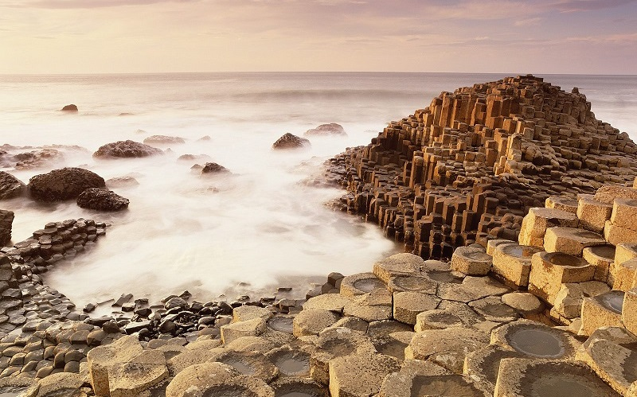

Surreal Places: Giant’s Causeway, Northern Ireland
Nestled next to the Atlantic Ocean, the Giant’s Causeway in Ireland is easily one of the most incredible, bizarre natural wonders in the world. The Causeway is home to more than 40,000 columns, most of which have six sides and form a honeycomb-like pattern. Giant’s Causeway wasn’t always the spectacular tourist hotspot it is today, though. Created from cooled magma, it took nearly 60 million years of erosion for the columns to be visible. Scientists believe that they were finally revealed after the last Ice Age, around 15,000 years ago.
Back